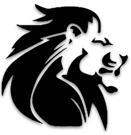

<nav class="sb-topnav navbar navbar-expand navbar-dark bg-smartlion p-0" >
    <a class="navbar-brand" routerLink="/home" style="color: black;  font-size: 34px;">
        
        Smart Lion
    </a>
    <button class="btn btn-link btn-lg order-1 order-lg-0"
            id="sidebarToggle">
        <i class="fas fa-bars"></i>
    </button>            
</nav>